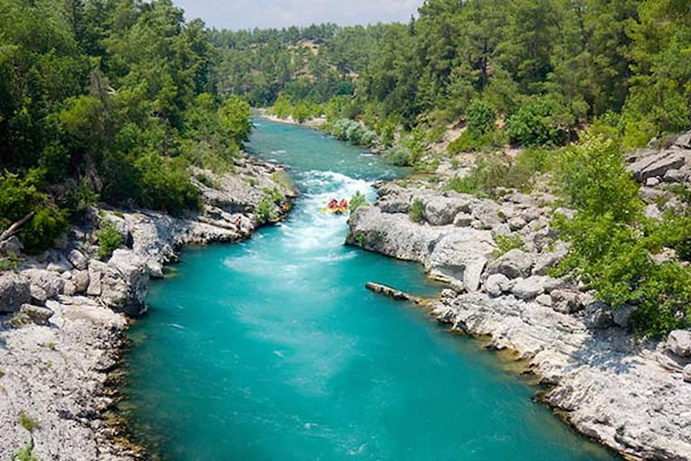
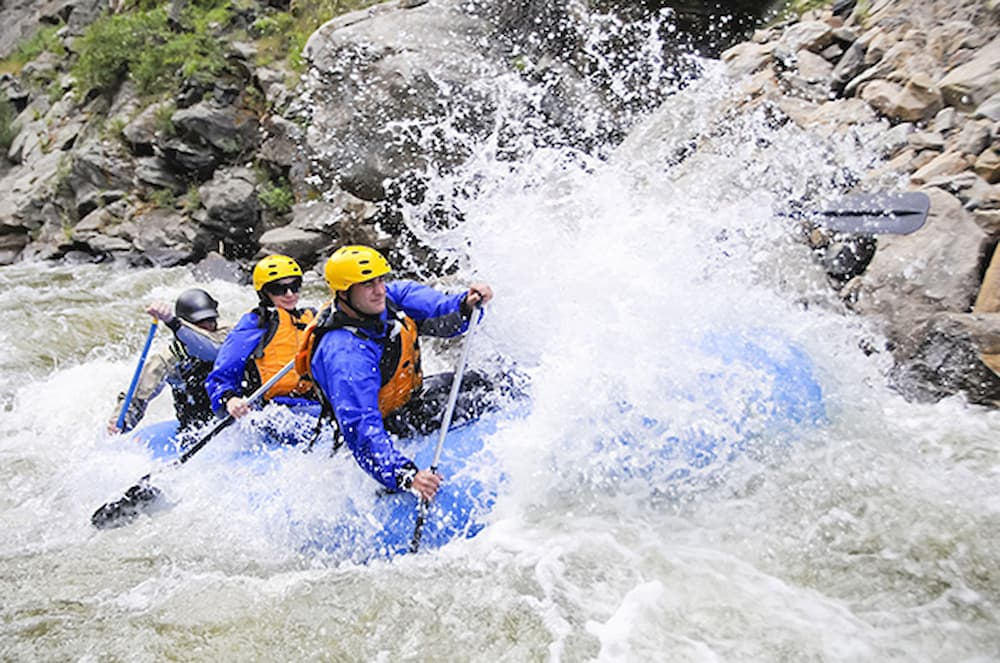

Our mission is to provide thrilling rafting experiences that connect people with nature and adventure. We value safety, fun, and creating memories that last a lifetime.


Whitewater Rafting Adventures
History
Founded in 2005, Founded on a passion for adventure and a deep respect for nature, Whitewater Rafting began as a small family-run operation offering guided trips along one of the region’s most scenic river stretches. What started with just a handful of rafts and a commitment to sharing the thrill of white-water exploration has grown into a trusted outdoor adventure company known for safety, expertise, and unforgettable experiences. Over the years, Whiteriver Rafting has expanded its routes, trained generations of skilled guides, and welcomed thousands of visitors seeking excitement, connection, and the beauty of the great outdoors. Despite the growth, the company remains rooted in its original mission—to inspire adventure while protecting the river that made it all possible.